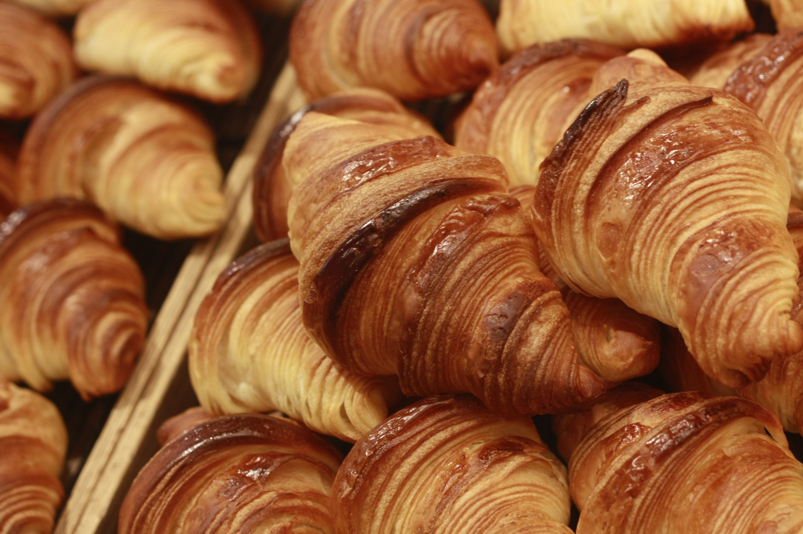

Bakery niji-pan
私たちは毎日食べるパンだからこそ「おいしくて体にやさしい」シンプルなパンを
食パン4種類を中心に取りそろえております。
信頼できる厳選した材料を使用して、素材の持ち味大切に、保存を目的としない製法で
少量ずつ丁寧に焼き上げております。
お客様とのふれあい、作り手の見えるパン作りを大切にして、
10年後も皆さまに愛されるパンを作って行きたいと考えております。

パン同様素材の持ち味、風味を生かした焼き菓子の販売を始めます。
giftセットのご用意も御座いますのでお手土産にいかがでしょうか。

濃い目のコーヒー、ホットミルクにぴったりのベルギー産チョコレートを包んだクロワッサン・ショコラ
2月の限定商品のお知らせです。朝食、ブレイクタイムにどうぞご賞味ください
〒157-0061
東京都世田谷区北烏山5-16-25
ＴＥＬ：03-3309-0034
営業時間：9：00～20：00
定休日：月曜日/年末年始
アクセス：京王井の頭線 久我山駅より徒歩10分
 Bakery niji-pan
Bakery niji-pan